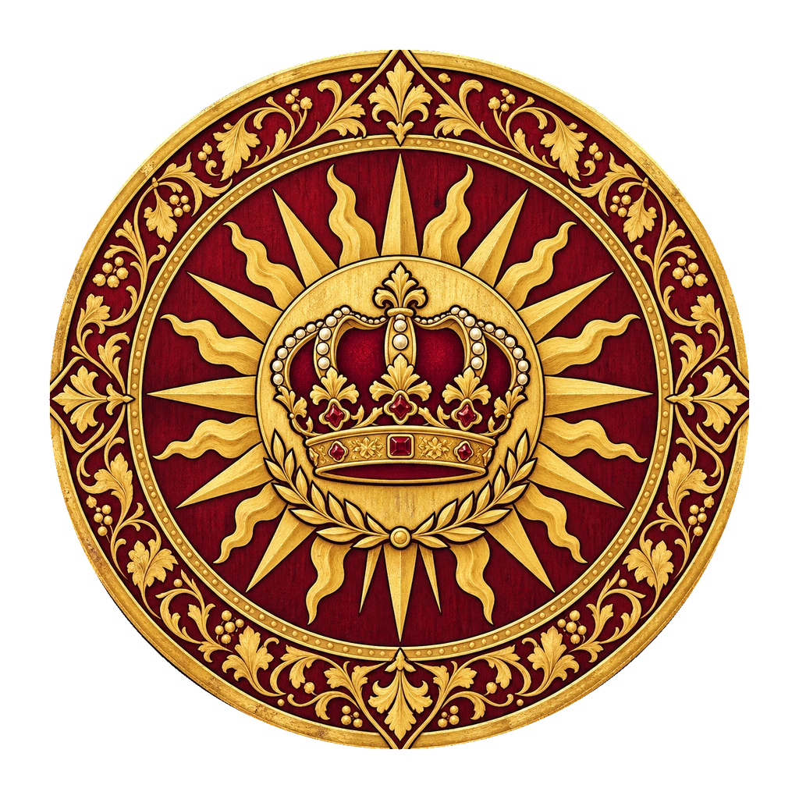

Vorbereitung · Besprechung · Entwurf
Goldmund
Im Glanz der Krone.
Im Stolz seiner Häuser.
Ein reiches Fürstentum in der Bildsprache des Heiligen Römischen Reiches: alte Aristokratie, prächtiges Rittertum und ein ausgeprägter Sinn für Rang, Wohlstand und höfische Würde.
Das Land gemeinsam ordnen ↓- Grafschaften
- 3
- Regionen
- 8
- Häuser im Entwurf
- 16

01 · Land & Herrschaft
Drei Grafschaften.
Ein goldmundischer Charakter.
Goldmund ist eine eigene Interpretation des mittelalterlichen Reiches deutscher Prägung. Kostbare Stoffe, stolze Heraldik und edle Aurelianerpferde prägen seine Gestaltung. Gold, Silber und Bronze treffen auf schwarze Wappentiere, Elfenbein und satte Farbfelder. Die Banner geben jeder Region ein eigenes festliches, herrschaftliches Gesicht.
Die Karte unterscheidet die fürstliche Grafschaft im Westen, die grüne Grafschaft im Nordosten und die türkisfarbene Grafschaft im Südosten. Für alle drei und ihre acht einzelnen Herrschaftsgebiete stehen hier eigene Namen und Banner zur Diskussion.
Weitere Hausränge, Lehensketten und Familiengeschichten sind noch offen. Ein versetztes Haus erhält dadurch keinen automatisch festgelegten Rang.
02 · Das Zeichen des Fürstentums
Vier Wege zu Goldmunds Wappen.
Kreisrunde, reich gefasste Heraldik mit malerischer Tiefe und klar lesbaren Motiven. Gold, Silber, Bronze und Schwarz erhalten je nach Entwurf ihren eigenen Schwerpunkt. Wähle ein Wappen für die Vorschau oben; die Entscheidung kann jederzeit geändert werden.
Neue Fassung · Bekannte Häuser
Roden, Goldveld & Lanette.
Eine Prunkkutsche mit Aurelianerpferden, ein goldener Löwe und ein golden gerüsteter Lanzenreiter.
03 · Elf neue Hausvorschläge
Stolze Tiere. Kostbare Güter.
Eine standesbewusste Heraldik.
Elf neue Namen und Wappenmotive ergänzen den Entwurf: neben Pferd, Steinbock, Falke, Kelch, Pfau und Greif auch ein eitler Pudel, zwei verliebte Aurelianer, ein silbergoldener Bussard, eine weiße Edelkatze und ein weißer Stier. Ihre Themen sind gestalterische Ansätze für die Besprechung; Herkunft, Rang und Familiengeschichte sind damit noch nicht festgelegt.
04 · Häuser & Orte
Welches Haus gehört wohin?
Ziehe freie Hauswappen auf die Orte der Karte oder in die Regionskarten darunter. Mit Tastatur und auf dem Handy kannst du ein Haus und seinen Sitz aus den Listen auswählen.
Ein freies Wappen auswählen und einen Ort anklicken – oder das Wappen direkt auf einen Ort ziehen.
Die Zuordnung ist noch offen
Freie Häuser
Roosenvelt, Broeck, Lanette und die elf neuen Hausvorschläge beginnen ohne Sitz. Bereits zugeordnete freie Häuser können hierher zurückgezogen werden.
05 · Acht Regionen mit eigenen Bannern
Ein Name für jedes Gebiet.
Ortsnamen bleiben wie auf der gelieferten Karte. Die umgebenden Baronien und Ritterfürstentümer erhalten eigene Namensvorschläge. Unter jeder Region stehen die Häuser deines aktuellen Entwurfs.
Der gemeinsame Arbeitsstand
Deinen Entwurf mitnehmen.
Die Datei enthält Hauszuordnungen, Gebiets- und Grafschaftsnamen, den gemeinsamen Landschaftsnamen sowie die Wappenauswahl. „Ausgangsstand“ setzt alle diese Vorschläge zurück; Goldveld und Roden bleiben in Thronholt.